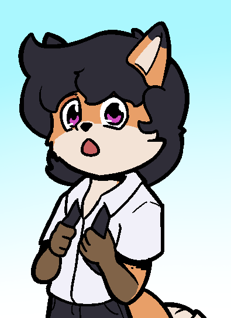
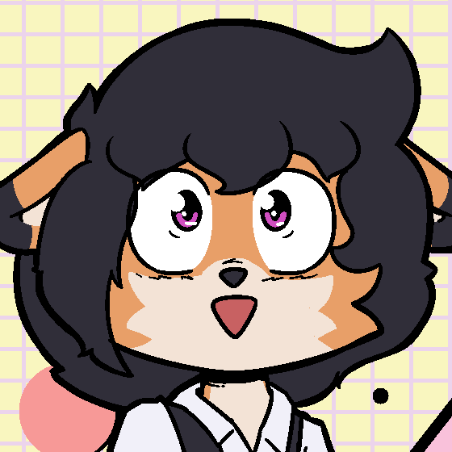

Wolno
Protagonist · Inu-sual Feelings
Physical appearance

Current Wolno design.
Wolno has soft short fur, a cream countershade that runs from his inner thighs to his nose, and brown coloration on his hands and paws from below the elbows and knees. His expression is usually relaxed, almost tired, and his eyes feature a small triangular shape inspired by old cartoon styles.
His everyday outfit is simple and comfortable, while his stage look includes mustard-colored pants and a vintage-style jacket over a plain shirt, paired with his keytar.
Personality

Wolno keeps a calm and low-profile attitude.
Wolno is easygoing, quiet and unassuming. Most of the time he appears ordinary and keeps to himself, which makes him seem forgettable in crowded social settings.
Despite that, he is perceptive and smarter than he lets on. He can navigate daily interactions just fine, but often lacks strong motivation and tends to go for the path of least resistance.
Everything changes around Inu. In her presence, Wolno becomes anxious, rambles, and struggles to keep his composure, showing a side of himself that rarely appears anywhere else.
Relationships

Wolno and Inu.
Inu
Wolno's relationship with Inu is mostly built on longing and mystery. He knows very little about her, yet she occupies a huge place in his heart. He is constantly trying to get closer to her, but she always seems just out of reach.
Roxanne
Roxanne is one of Wolno's closest friends. Their dynamic is playful and full of teasing, but there is strong trust underneath. Wolno often relies on her practical advice when things get complicated.
Skye
Wolno and Skye are close friends through their shared connection with Roxanne. While their bond is quieter, Skye brings optimism that balances Wolno's laid-back personality and helps keep their friend group grounded.
Trivia
- Wolno was created around 2020 and is the author's first OC.
- The character is loosely inspired by the author's high school self.
- His eye triangle comes from early drawings inspired by old cartoons.
- His stage look was inspired by retro fashion from La La Land.
- He plays a Yamaha SHS-10 keytar in his band with Roxanne and Skye.